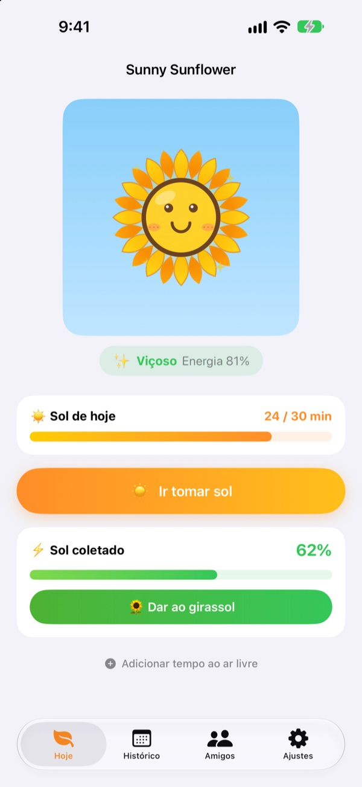
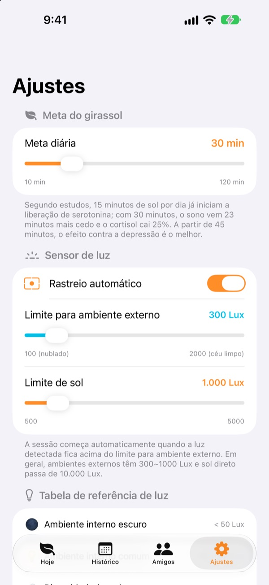
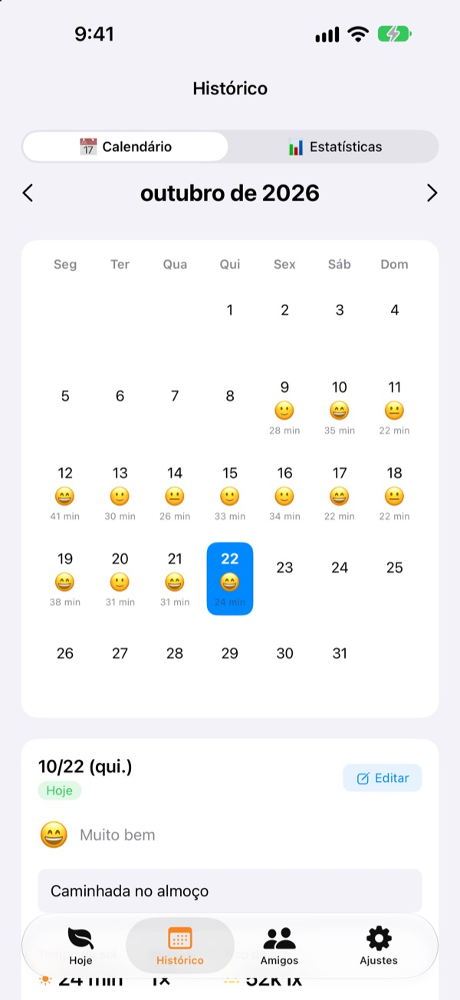
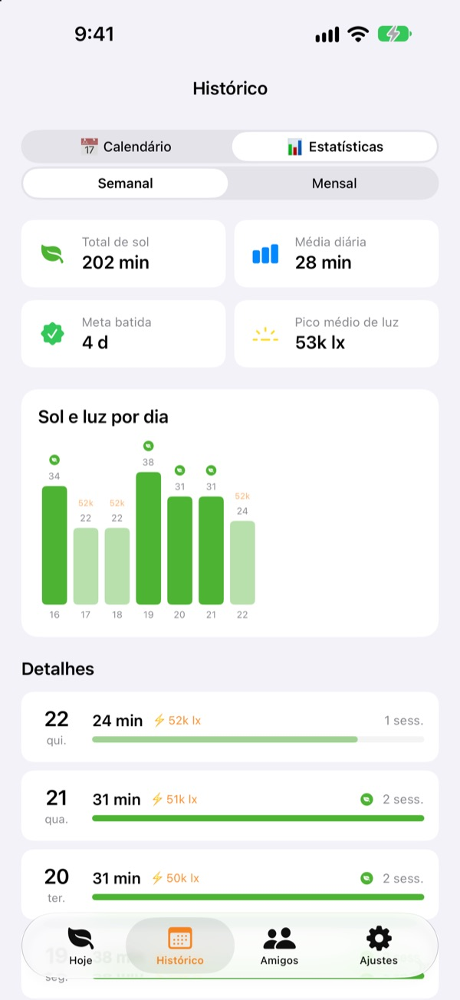

O sol de hoje
faz seu girassol crescer
É só sair que o seu tempo no sol vai somando sozinho. Dê ao girassol o sol que você coletou e ele fica viçoso. Esqueça dele por alguns dias e ele começa a murchar.
Todos os recursos são grátis. Seus registros ficam no seu aparelho.

Colete um pouco de sol
Escolha a claridade e por quanto tempo, tome sol e dê para um girassol que já está murchando.
Quantos minutos de sol você tomou hoje?
Alguns passos até o trabalho, uma saída rápida para almoçar. Quem passa o dia em lugar fechado só percebe à noite que quase não viu a luz do dia. O Sunny Sunflower mostra seu tempo ao ar livre em números, e o seu girassol fica esperando a caminhada de amanhã.
Saia e ele mede sozinho
Toque em Ir tomar sol e saia. O app estima a claridade ao seu redor com os dados de exposição da câmera frontal. Quando a luz fica no nível de ambiente externo por uns 30 segundos, o registro começa. Nenhuma foto é tirada ou salva.
Depois disso, o sensor liga só 20 segundos a cada 2 minutos para poupar bateria.

Sol e humor, todo dia
No calendário, cada dia guarda o tempo no sol, um emoji de humor e uma notinha. Ficou ao ar livre sem registrar? Com Adicionar tempo ao ar livre você soma de 5 a 120 minutos.

Sua semana e seu mês num relance
As estatísticas semanais e mensais mostram os dias em que você bateu a meta e a sua média de sol. Defina uma meta diária de 10 a 120 minutos e veja na tela principal quanto falta hoje.
Os widgets da tela de início e da tela bloqueada, além da Dynamic Island, mostram o sol de hoje e como está o seu girassol.

Comece em três passos
- 1
Defina sua meta diária
Começa em 30 minutos. Nos ajustes você escolhe de 10 a 120.
- 2
Saia para tomar sol
Toque em
Ir tomar sole saia com o app aberto. O acesso à câmera é pedido só uma vez. - 3
Alimente o girassol
Toque em
Dar ao girassolpara transformar o sol coletado em energia.
Como a luz vira sol coletado
- Abaixo de 300 lux
- Luz fraca: não conta como tempo no sol
- De 300 a 1.000 lux
- Externo/nublado: de 1 a 3% a cada 10 minutos
- De 1.000 a 10.000 lux
- Sol: de 3 a 33% a cada 10 minutos
- A partir de 10.000 lux
- Sol forte: mais de 33% a cada 10 minutos
- Sol coletado
- minutos × lux médio ÷ 3.000 (até 100% por sessão)
- Energia do girassol
- cai 2,5% por hora, cerca de 60% por dia
Nos ajustes, o limite para ambiente externo vai de 100 a 2.000 lux. O padrão é 300 lux.
Perguntas frequentes
Como o sol é medido?
O app estima a claridade ao seu redor (iluminância) com os dados de exposição da câmera frontal. Quando a luz fica no nível de ambiente externo por um tempinho, o registro começa sozinho. Nenhuma foto é tirada ou salva.
Gasta muita bateria?
Depois que o sol é confirmado, o sensor não fica ligado direto: ele acorda por uns 20 segundos a cada 2 minutos para medir de novo, e um simples cronômetro cuida do resto.
Meu girassol vive murchando.
O girassol perde 2,5% de energia a cada hora. Colete sol e toque em Dar ao girassol. Num dia limpo, 15 a 20 minutos no sol direto bastam para repor um dia inteiro.
Fiquei ao ar livre e nada foi registrado.
Use Adicionar tempo ao ar livre, no fim da tela principal, para somar de 5 a 120 minutos. Se em dias nublados o registro demora a começar, diminua o limite para ambiente externo nos ajustes.
Como funciona o recurso de amigos?
Se você e um amigo estiverem perto (até uns 10 m) e os dois estiverem medindo o sol, vocês se conectam sozinhos. Com alguém novo, primeiro é preciso confirmar que vão tomar sol juntos; depois fica automático. As pétalas ficam coloridas e voltam à cor original em 3 dias, e o tempo de vocês juntos fica salvo na aba de amigos. Os dois precisam do app e de permitir o acesso ao Bluetooth e à rede local.
É grátis mesmo?
Sim. Sem anúncios e sem compras, com todos os recursos. Se gostar, dá para deixar uma gorjeta no app, mas ela não libera nada a mais.
Dá para fazer backup ou passar meus registros para outro iPhone?
Tudo fica no aparelho, sem servidor, e os últimos 90 dias são guardados. Não há exportação separada, mas seus registros entram no backup normal do iPhone no iCloud ou no computador.
Como apago todos os dados?
Nos ajustes do app, toque em Redefinir dados, ou apague o app. Não dá para desfazer.
Onde relato um problema?
Escreva para o e-mail abaixo ou abra uma issue no GitHub (github.com/M1zz/SunlightTracker/issues). O modelo do aparelho, a versão do iOS e o que aconteceu ajudam muito. Costumamos responder em poucos dias.
Dúvidas ou sugestões? Escreva para leeo@kakao.com.